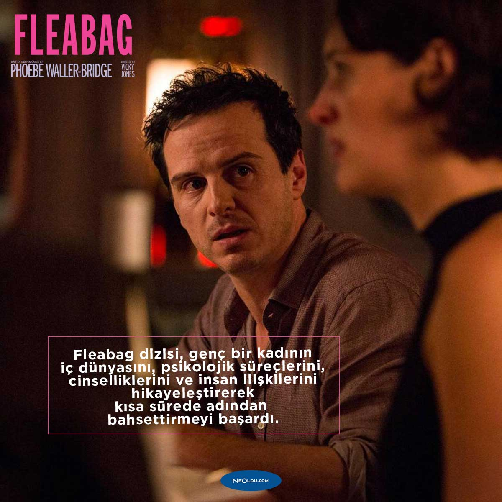

Oldukça samimi bir dizi olan The Good Place'de sonraki yaşamda insanı neler bekliyor konusunu "alaycı" bir şekilde ele alan bir komedi dizisidir. Sonraki yaşamdaki "sonsuz mutluluk" kavramının sorgulanmasına olanak sağlar.

Fleabag, Londra'da tek başına ayakları üzerinde durmaya çalışan bir kadının hikayesini konu ediyor.
Emmy ödüllü sitcom, Jay Pritchett ve eklektik ailesinin Los Angeles'ta modern hayatın zorluklarıyla uğraşmasını konu alıyor. Bu dizi, birçok ödülün yanı sıra, arka arkaya beş yıl En İyi Komedi Dizisi dalında Emmy ödülü kazandı.